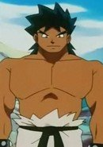
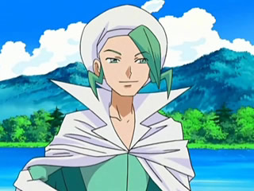

|  |
Bruno |
Pokemon |
Bruno is part of Kanto Elite Four. He specializes in Fighting-types Pokemon. Bruno has amazing physical power and agility in the anime, and appears capable of using them with almost superhuman expertise. |
 |
Simon Callum |
The Ancient Magus' Bride |
|  |
Wallace |
Pokemon Diamond and Pearl |
 |
Wilhelm Schultz |
Allison and Lillia |
Wilhem Schultz or Travas is Allison's childhood friend. He is a scholar who has the ability to memorize things instantly and skilled at firearms. He does has the sense for adventure like Allison. |